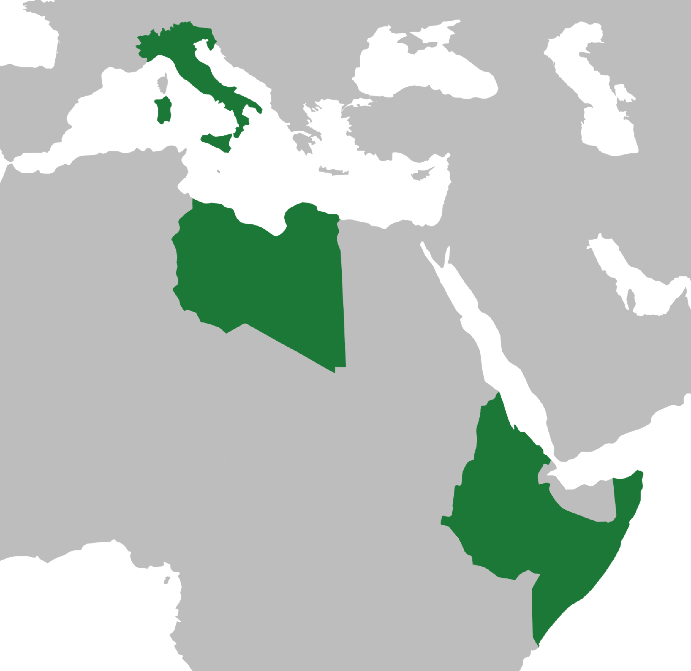

| Info Table | |
|---|---|
| Capital | Rome |
| Monarch | Victor Emmanuel III. |
| Prime Minister | Benito Mussolini |
| Type of Government | Dictatorship |
| Population | 42,993,602 |
| Land Area | 310,190 km² (without colonies) |
| Currency | Lira |


Fascist Italy
After WW1, despite being on the winner side, Italy experienced massive ecomic downturn and unemployment.
This only worsened in the Great Depression and ended with the rise of the far-right and far-left.
One man named Benito Mussolini had a vision for Italy. Before WW1, he was a member oft he Italian Socialist Party,
but was expelled for his pro-war standing.
He formed his own party called National Fascist Party. He was a great talker and soon, with his promises to lead Italy back to greatness,
he became very popular among the population.
At last, in 1922 he marched on Rome with his troops and successfully forced the king to make him prime minister. Time after time,
Italy’s democracy was dismantled.
In 1935, Mussolini began the Second Italo-Ethiopian War, making Ethiopia a colony, which was disliked by the League of Nations,
leading to sanctions. This created a a form of economic autarky in Italy and its closer ties to Germany.